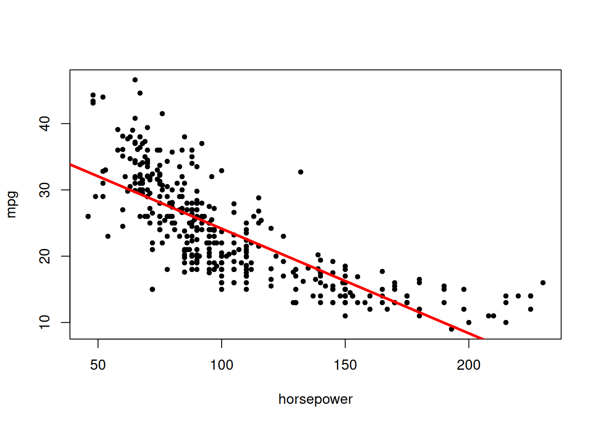
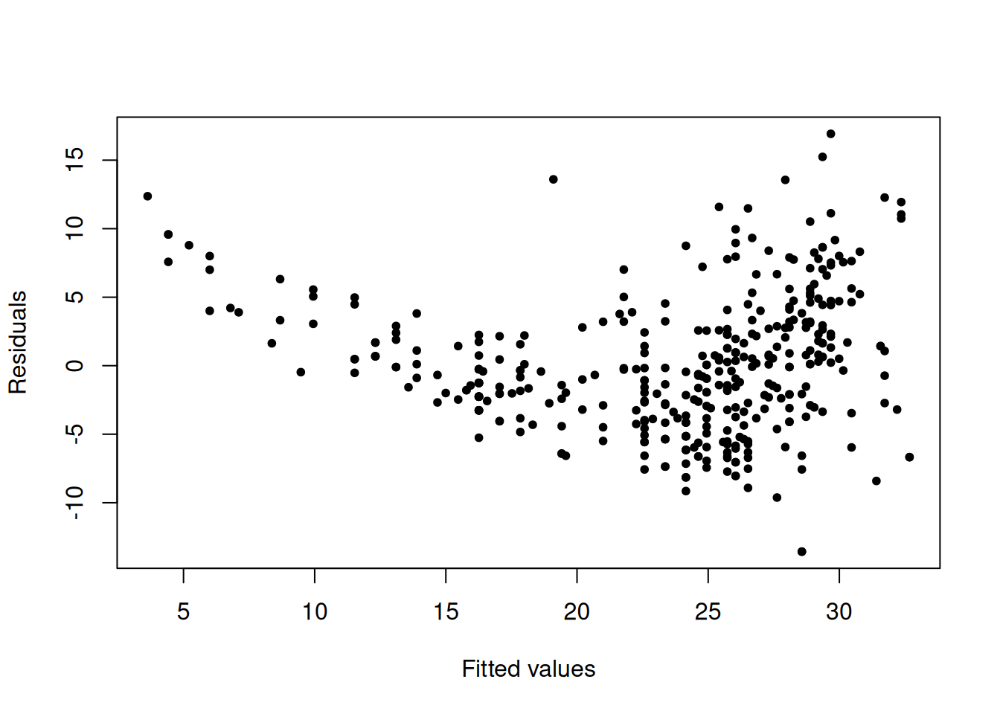
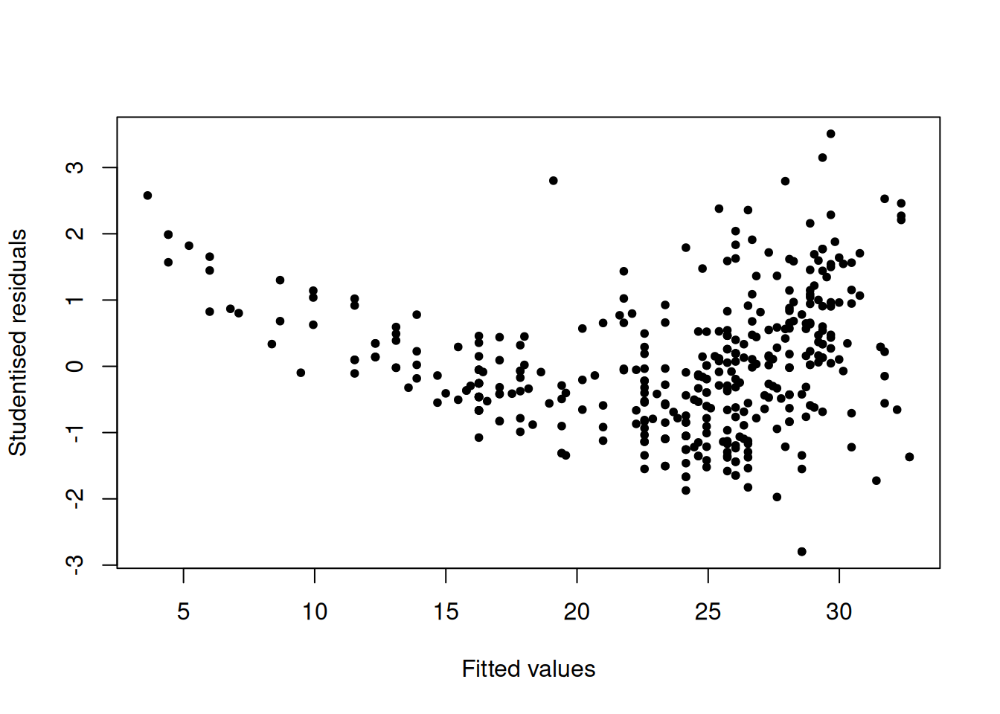
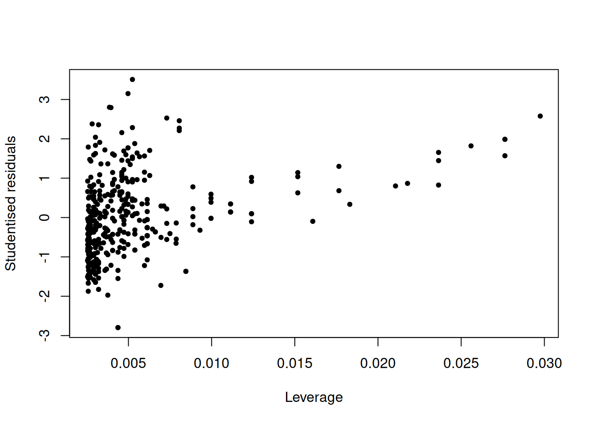
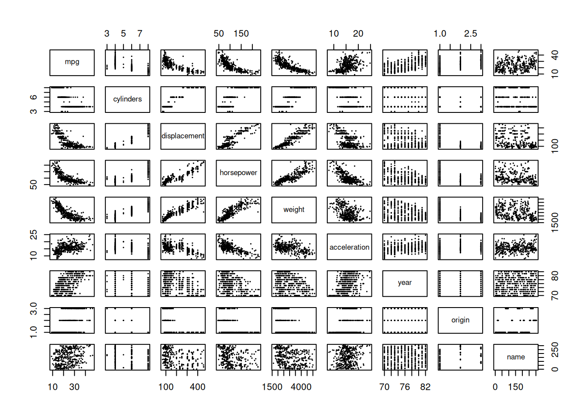
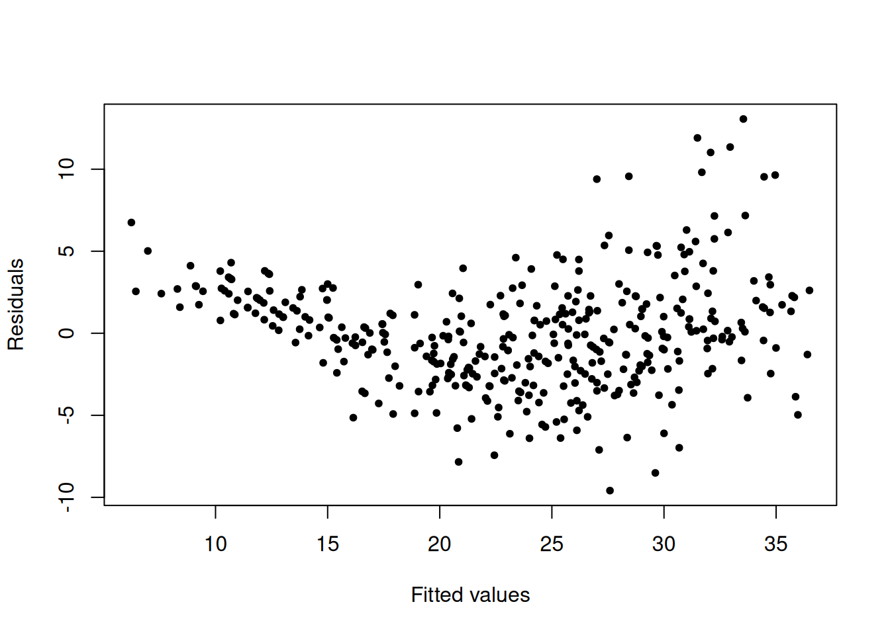
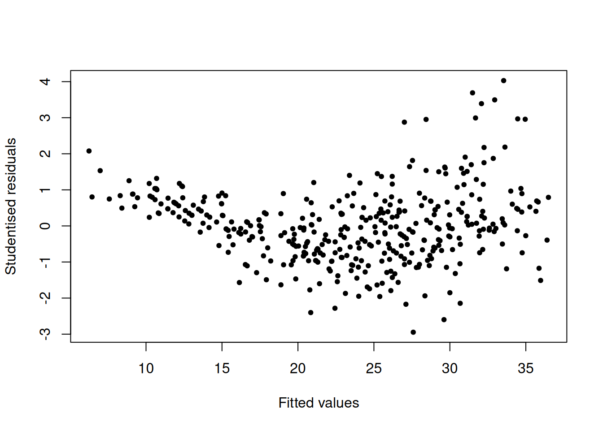
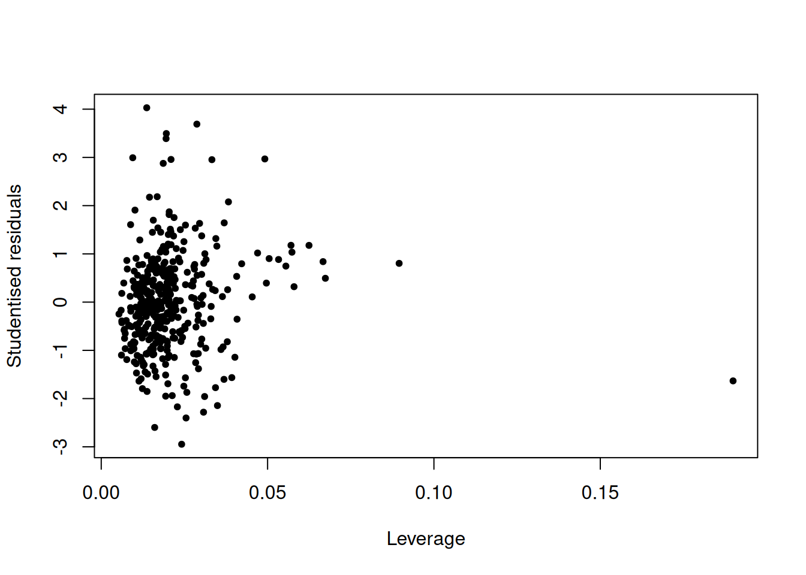
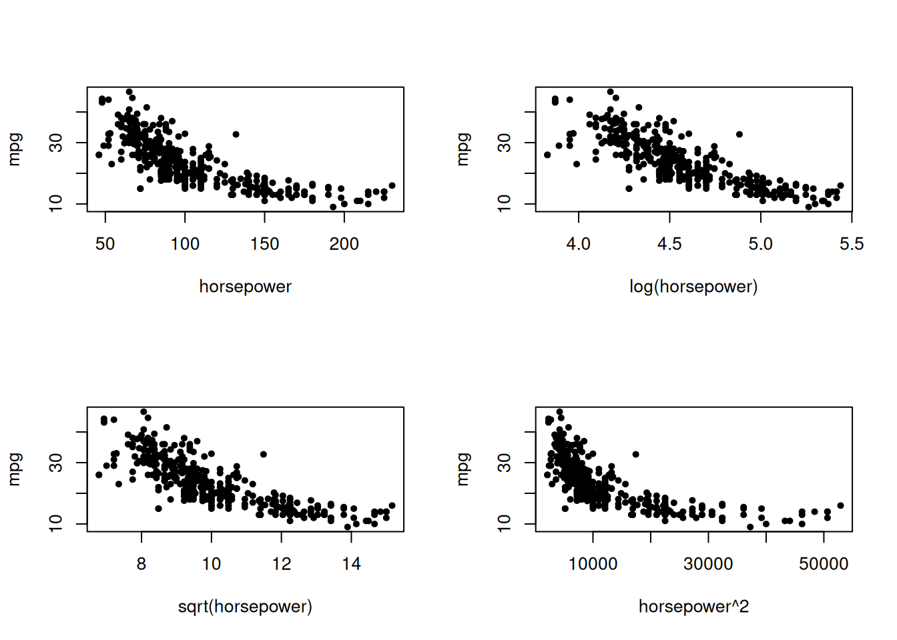

3 Linear Regression
3.1 Conceptual
3.1.1 Question 1
Describe the null hypotheses to which the _p_values given in Table 3.4 correspond. Explain what conclusions you can draw based on these _p_values. Your explanation should be phrased in terms of
sales,TV,radio, andnewspaper, rather than in terms of the coefficients of the linear model.
3.1.2 Question 2
Carefully explain the differences between the KNN classifier and KNN regression methods.
3.1.3 Question 3
Suppose we have a data set with five predictors, \(X_1\) = GPA, \(X_2\) = IQ, \(X_3\) = Level (1 for College and 0 for High School), \(X_4\) = Interaction between GPA and IQ, and \(X_5\) = Interaction between GPA and Level. The response is starting salary after graduation (in thousands of dollars). Suppose we use least squares to fit the model, and get \(\hat\beta_0 = 50\), \(\hat\beta_1 = 20\), \(\hat\beta_2 = 0.07\), \(\hat\beta_3 = 35\), \(\hat\beta_4 = 0.01\), \(\hat\beta_5 = -10\).
Which answer is correct, and why?
- For a fixed value of IQ and GPA, high school graduates earn more on average than college graduates.
- For a fixed value of IQ and GPA, college graduates earn more on average than high school graduates.
- For a fixed value of IQ and GPA, high school graduates earn more on average than college graduates provided that the GPA is high enough.
- For a fixed value of IQ and GPA, college graduates earn more on average than high school graduates provided that the GPA is high enough.
Predict the salary of a college graduate with IQ of 110 and a GPA of 4.0.
True or false: Since the coefficient for the GPA/IQ interaction term is very small, there is very little evidence of an interaction effect. Justify your answer.
3.1.4 Question 4
I collect a set of data (\(n = 100\) observations) containing a single predictor and a quantitative response. I then fit a linear regression model to the data, as well as a separate cubic regression, i.e. \(Y = \beta_0 + \beta_1X + \beta_2X^2 + \beta_3X^3 + \epsilon\).
Suppose that the true relationship between \(X\) and \(Y\) is linear, i.e. \(Y = \beta_0 + \beta_1X + \epsilon\). Consider the training residual sum of squares (RSS) for the linear regression, and also the training RSS for the cubic regression. Would we expect one to be lower than the other, would we expect them to be the same, or is there not enough information to tell? Justify your answer.
Answer (a) using test rather than training RSS.
Suppose that the true relationship between \(X\) and \(Y\) is not linear, but we don’t know how far it is from linear. Consider the training RSS for the linear regression, and also the training RSS for the cubic regression. Would we expect one to be lower than the other, would we expect them to be the same, or is there not enough information to tell? Justify your answer.
Answer (c) using test rather than training RSS.
3.1.5 Question 5
Consider the fitted values that result from performing linear regression without an intercept. In this setting, the ith fitted value takes the form \[\hat{y}_i = x_i\hat\beta,\] where \[\hat{\beta} = \left(\sum_{i=1}^nx_iy_i\right) / \left(\sum_{i' = 1}^n x^2_{i'}\right).\] show that we can write \[\hat{y}_i = \sum_{i' = 1}^na_{i'}y_{i'}\] What is \(a_{i'}\)?
Note: We interpret this result by saying that the fitted values from linear regression are linear combinations of the response values.
3.1.6 Question 6
Using (3.4), argue that in the case of simple linear regression, the least squares line always passes through the point \((\bar{x}, \bar{y})\).
3.1.7 Question 7
It is claimed in the text that in the case of simple linear regression of \(Y\) onto \(X\), the \(R^2\) statistic (3.17) is equal to the square of the correlation between \(X\) and \(Y\) (3.18). Prove that this is the case. For simplicity, you may assume that \(\bar{x} = \bar{y} = 0\).
3.2 Applied
3.2.1 Question 8
This question involves the use of simple linear regression on the Auto data set.
- Use the
lm()function to perform a simple linear regression withmpgas the response andhorsepoweras the predictor. Use thesummary()function to print the results. Comment on the output. For example:
Auto <- read.table("data/Auto.data", na.strings = "?", stringsAsFactors = T, header = T)
Auto <- na.omit(Auto)
attach(Auto)
lm.fit <- lm(mpg ~ horsepower)
summary(lm.fit)##
## Call:
## lm(formula = mpg ~ horsepower)
##
## Residuals:
## Min 1Q Median 3Q Max
## -13.5710 -3.2592 -0.3435 2.7630 16.9240
##
## Coefficients:
## Estimate Std. Error t value Pr(>|t|)
## (Intercept) 39.935861 0.717499 55.66 <2e-16 ***
## horsepower -0.157845 0.006446 -24.49 <2e-16 ***
## ---
## Signif. codes: 0 '***' 0.001 '**' 0.01 '*' 0.05 '.' 0.1 ' ' 1
##
## Residual standard error: 4.906 on 390 degrees of freedom
## Multiple R-squared: 0.6059, Adjusted R-squared: 0.6049
## F-statistic: 599.7 on 1 and 390 DF, p-value: < 2.2e-16
- Is there a relationship between the predictor and the response?
Yes. The p-value for the t-statistic for horsepower is extremely low, which suggests a relationship.
- How strong is the relationship between the predictor and the response?
## [1] 23.44592The RSE is 4.906 while the mean value of the response is 23.44592.
## [1] 0.2092371This suggests a roughly 21% percentage error.
The \(R^2\) statistic is 0.6059 so our predictor explains 60.59% of the variance in the response.
- Is the relationship between the predictor and the response positive or negative?
## [1] -0.1578447The coefficient is less than 0, so the relationship is negative. > iv. What is the predicted mpg associated with a horsepower of 98?
## [1] 24.46708
- What are the associated 95% confidence and prediction intervals?
## fit lwr upr
## 1 24.46708 23.97308 24.96108## fit lwr upr
## 1 24.46708 14.8094 34.12476
- Plot the response and the predictor. Use the
abline()function to display the least squares regression line.

- Use the
plot()function to produce diagnostic plots of the least squares regression fit. Comment on any problems you see with the fit.
 There appears to be some evidence of non-linearity as it looks like there is a relationship between the fitted values and residuals.
plot(predict(lm.fit), rstudent(lm.fit), pch = 20, xlab = "Fitted values", ylab = "Studentised residuals")
There are some data points with studentised residuals above 3 - these are possible outliers.
plot(hatvalues(lm.fit), rstudent(lm.fit), pch=20, xlab = "Leverage", ylab = "Studentised residuals") There are a few very high leverage points, however none are outside the studentised residual range of 3 to -3.
3.2.2 Question 9
This question involves the use of multiple linear regression on the
Autodata set.
- Produce a scatterplot matrix which includes all of the variables in the data set.

- Compute the matrix of correlations between the variables using the function
cor(). You will need to exclude the name variable,namewhich is qualitative.
## mpg cylinders displacement horsepower weight
## mpg 1.0000000 -0.7776175 -0.8051269 -0.7784268 -0.8322442
## cylinders -0.7776175 1.0000000 0.9508233 0.8429834 0.8975273
## displacement -0.8051269 0.9508233 1.0000000 0.8972570 0.9329944
## horsepower -0.7784268 0.8429834 0.8972570 1.0000000 0.8645377
## weight -0.8322442 0.8975273 0.9329944 0.8645377 1.0000000
## acceleration 0.4233285 -0.5046834 -0.5438005 -0.6891955 -0.4168392
## year 0.5805410 -0.3456474 -0.3698552 -0.4163615 -0.3091199
## origin 0.5652088 -0.5689316 -0.6145351 -0.4551715 -0.5850054
## acceleration year origin
## mpg 0.4233285 0.5805410 0.5652088
## cylinders -0.5046834 -0.3456474 -0.5689316
## displacement -0.5438005 -0.3698552 -0.6145351
## horsepower -0.6891955 -0.4163615 -0.4551715
## weight -0.4168392 -0.3091199 -0.5850054
## acceleration 1.0000000 0.2903161 0.2127458
## year 0.2903161 1.0000000 0.1815277
## origin 0.2127458 0.1815277 1.0000000
- Use the
lm()function to perform a multiple linear regression withmpgas the response and all other variables except name as the predictors. Use thesummary()function to print the results. Comment on the output. For instance:
##
## Call:
## lm(formula = mpg ~ . - name, data = Auto)
##
## Residuals:
## Min 1Q Median 3Q Max
## -9.5903 -2.1565 -0.1169 1.8690 13.0604
##
## Coefficients:
## Estimate Std. Error t value Pr(>|t|)
## (Intercept) -17.218435 4.644294 -3.707 0.00024 ***
## cylinders -0.493376 0.323282 -1.526 0.12780
## displacement 0.019896 0.007515 2.647 0.00844 **
## horsepower -0.016951 0.013787 -1.230 0.21963
## weight -0.006474 0.000652 -9.929 < 2e-16 ***
## acceleration 0.080576 0.098845 0.815 0.41548
## year 0.750773 0.050973 14.729 < 2e-16 ***
## origin 1.426141 0.278136 5.127 4.67e-07 ***
## ---
## Signif. codes: 0 '***' 0.001 '**' 0.01 '*' 0.05 '.' 0.1 ' ' 1
##
## Residual standard error: 3.328 on 384 degrees of freedom
## Multiple R-squared: 0.8215, Adjusted R-squared: 0.8182
## F-statistic: 252.4 on 7 and 384 DF, p-value: < 2.2e-16
- Is there a relationship between the predictors and the response?
Yes, as the p-value calculated from the F-test is very low.
- Which predictors appear to have a statistically significant relationship to the response?
displacement, weight, year, and origin.
- What does the coefficient for the
yearvariable suggest?
year and mpg have a positive relationship, so the later a car is produced, the higher its miles per gallon.
- Use the
plot()function to produce diagnostic plots of the linear regression fit. Comment on any problems you see with the fit. Do the residual plots suggest any unusually large outliers? Does the leverage plot identify any observations with unusually high leverage?
 There seems to be some kind of non-linearity in our dataset as the residuals seem to have some relationship with the fitted values.
plot(predict(lm.fit), rstudent(lm.fit), pch = 20, xlab = "Fitted values", ylab = "Studentised residuals") There are quite a few high residual values; their studentised residual values are above 3 which indicates an outlier.
plot(hatvalues(lm.fit), rstudent(lm.fit), pch=20, xlab = "Leverage", ylab = "Studentised residuals")
## [1] 0.1899129There is a very high leverage point with a leverage of 0.19.
- Use the
*and:symbols to fit linear regression models with interaction effects. Do any interactions appear to be statistically significant?
##
## Call:
## lm(formula = mpg ~ (. - name) * (. - name), data = Auto)
##
## Residuals:
## Min 1Q Median 3Q Max
## -7.6303 -1.4481 0.0596 1.2739 11.1386
##
## Coefficients:
## Estimate Std. Error t value Pr(>|t|)
## (Intercept) 3.548e+01 5.314e+01 0.668 0.50475
## cylinders 6.989e+00 8.248e+00 0.847 0.39738
## displacement -4.785e-01 1.894e-01 -2.527 0.01192 *
## horsepower 5.034e-01 3.470e-01 1.451 0.14769
## weight 4.133e-03 1.759e-02 0.235 0.81442
## acceleration -5.859e+00 2.174e+00 -2.696 0.00735 **
## year 6.974e-01 6.097e-01 1.144 0.25340
## origin -2.090e+01 7.097e+00 -2.944 0.00345 **
## cylinders:displacement -3.383e-03 6.455e-03 -0.524 0.60051
## cylinders:horsepower 1.161e-02 2.420e-02 0.480 0.63157
## cylinders:weight 3.575e-04 8.955e-04 0.399 0.69000
## cylinders:acceleration 2.779e-01 1.664e-01 1.670 0.09584 .
## cylinders:year -1.741e-01 9.714e-02 -1.793 0.07389 .
## cylinders:origin 4.022e-01 4.926e-01 0.816 0.41482
## displacement:horsepower -8.491e-05 2.885e-04 -0.294 0.76867
## displacement:weight 2.472e-05 1.470e-05 1.682 0.09342 .
## displacement:acceleration -3.479e-03 3.342e-03 -1.041 0.29853
## displacement:year 5.934e-03 2.391e-03 2.482 0.01352 *
## displacement:origin 2.398e-02 1.947e-02 1.232 0.21875
## horsepower:weight -1.968e-05 2.924e-05 -0.673 0.50124
## horsepower:acceleration -7.213e-03 3.719e-03 -1.939 0.05325 .
## horsepower:year -5.838e-03 3.938e-03 -1.482 0.13916
## horsepower:origin 2.233e-03 2.930e-02 0.076 0.93931
## weight:acceleration 2.346e-04 2.289e-04 1.025 0.30596
## weight:year -2.245e-04 2.127e-04 -1.056 0.29182
## weight:origin -5.789e-04 1.591e-03 -0.364 0.71623
## acceleration:year 5.562e-02 2.558e-02 2.174 0.03033 *
## acceleration:origin 4.583e-01 1.567e-01 2.926 0.00365 **
## year:origin 1.393e-01 7.399e-02 1.882 0.06062 .
## ---
## Signif. codes: 0 '***' 0.001 '**' 0.01 '*' 0.05 '.' 0.1 ' ' 1
##
## Residual standard error: 2.695 on 363 degrees of freedom
## Multiple R-squared: 0.8893, Adjusted R-squared: 0.8808
## F-statistic: 104.2 on 28 and 363 DF, p-value: < 2.2e-16Adding all possible interaction terms, acceleration:origin seems to be the one with the highest statistical significance. acceleration:year and displacement:year are also below the 0.05 level of significance, so should likely be included as well.
lm.fitnoint <- lm(mpg ~ . - name, data = Auto)
lm.fitint <- lm(mpg ~ . - name + acceleration:origin + acceleration:year + displacement:year, data = Auto)
anova(lm.fitnoint, lm.fitint)## Analysis of Variance Table
##
## Model 1: mpg ~ (cylinders + displacement + horsepower + weight + acceleration +
## year + origin + name) - name
## Model 2: mpg ~ (cylinders + displacement + horsepower + weight + acceleration +
## year + origin + name) - name + acceleration:origin + acceleration:year +
## displacement:year
## Res.Df RSS Df Sum of Sq F Pr(>F)
## 1 384 4252.2
## 2 381 3457.6 3 794.63 29.188 < 2.2e-16 ***
## ---
## Signif. codes: 0 '***' 0.001 '**' 0.01 '*' 0.05 '.' 0.1 ' ' 1The ANOVA test shows that including these interaction terms significantly increases the fit of the model.
- Try a few different transformations of the variables, such as \(log(X)\), \(\sqrt{X}\), \(X^2\). Comment on your findings.
Let’s look at horsepower:
par(mfrow = c(2, 2))
plot(horsepower, mpg, pch = 20)
plot(log(horsepower), mpg, pch = 20)
plot(sqrt(horsepower), mpg, pch = 20)
plot(horsepower^2, mpg, pch = 20)
Looking at these plots, the relationship between log(horsepower) and mpg seems more linear.
lm.fitlog <- lm(mpg ~ . - name + log(horsepower), data = Auto)
lm.fitnolog <- lm(mpg ~ . - name, data = Auto)
anova(lm.fitnolog, lm.fitlog)## Analysis of Variance Table
##
## Model 1: mpg ~ (cylinders + displacement + horsepower + weight + acceleration +
## year + origin + name) - name
## Model 2: mpg ~ (cylinders + displacement + horsepower + weight + acceleration +
## year + origin + name) - name + log(horsepower)
## Res.Df RSS Df Sum of Sq F Pr(>F)
## 1 384 4252.2
## 2 383 3354.0 1 898.19 102.56 < 2.2e-16 ***
## ---
## Signif. codes: 0 '***' 0.001 '**' 0.01 '*' 0.05 '.' 0.1 ' ' 1The ANOVA test shows that including the log(horsepower) term significantly improves the performance of the model.
3.2.3 Question 10
This question should be answered using the
Carseatsdata set.
Fit a multiple regression model to predict
SalesusingPrice,Urban, andUS.Provide an interpretation of each coefficient in the model. Be careful—some of the variables in the model are qualitative!
Write out the model in equation form, being careful to handle the qualitative variables properly.
For which of the predictors can you reject the null hypothesis \(H_0 : \beta_j = 0\)?
On the basis of your response to the previous question, fit a smaller model that only uses the predictors for which there is evidence of association with the outcome.
How well do the models in (a) and (e) fit the data?
Using the model from (e), obtain 95% confidence intervals for the coefficient(s).
Is there evidence of outliers or high leverage observations in the model from (e)?
3.2.4 Question 11
In this problem we will investigate the t-statistic for the null hypothesis \(H_0 : \beta = 0\) in simple linear regression without an intercept. To begin, we generate a predictor
xand a responseyas follows.
Perform a simple linear regression of
yontox, without an intercept. Report the coefficient estimate \(\hat{\beta}\), the standard error of this coefficient estimate, and the t-statistic and _p_value associated with the null hypothesis \(H_0 : \beta = 0\). Comment on these results. (You can perform regression without an intercept using the commandlm(y~x+0).)Now perform a simple linear regression of
xontoywithout an intercept, and report the coefficient estimate, its standard error, and the corresponding t-statistic and _p_values associated with the null hypothesis \(H_0 : \beta = 0\). Comment on these results.What is the relationship between the results obtained in (a) and (b)?
For the regression of \(Y\) onto \(X\) without an intercept, the t-statistic for \(H_0 : \beta = 0\) takes the form \(\hat{\beta}/SE(\hat{\beta})\), where \(\hat{\beta}\) is given by (3.38), and where \[ SE(\hat\beta) = \sqrt{\frac{\sum_{i=1}^n(y_i - x_i\hat\beta)^2}{(n-1)\sum_{i'=1}^nx_{i'}^2}}. \] (These formulas are slightly different from those given in Sections 3.1.1 and 3.1.2, since here we are performing regression without an intercept.) Show algebraically, and confirm numerically in R, that the t-statistic can be written as \[ \frac{(\sqrt{n-1}) \sum_{i-1}^nx_iy_i)} {\sqrt{(\sum_{i=1}^nx_i^2)(\sum_{i'=1}^ny_{i'}^2)-(\sum_{i'=1}^nx_{i'}y_{i'})^2}} \]
Using the results from (d), argue that the t-statistic for the regression of y onto x is the same as the t-statistic for the regression of
xontoy.In
R, show that when regression is performed with an intercept, the t-statistic for \(H_0 : \beta_1 = 0\) is the same for the regression ofyontoxas it is for the regression ofxontoy.
3.2.5 Question 12
This problem involves simple linear regression without an intercept.
Recall that the coefficient estimate \(\hat{\beta}\) for the linear regression of \(Y\) onto \(X\) without an intercept is given by (3.38). Under what circumstance is the coefficient estimate for the regression of \(X\) onto \(Y\) the same as the coefficient estimate for the regression of \(Y\) onto \(X\)?
Generate an example in
Rwith \(n = 100\) observations in which the coefficient estimate for the regression of \(X\) onto \(Y\) is different from the coefficient estimate for the regression of \(Y\) onto \(X\).Generate an example in
Rwith \(n = 100\) observations in which the coefficient estimate for the regression of \(X\) onto \(Y\) is the same as the coefficient estimate for the regression of \(Y\) onto \(X\).
3.2.6 Question 13
In this exercise you will create some simulated data and will fit simple linear regression models to it. Make sure to use
set.seed(1)prior to starting part (a) to ensure consistent results.
Using the
rnorm()function, create a vector,x, containing 100 observations drawn from a \(N(0, 1)\) distribution. This represents a feature, \(X\).Using the
rnorm()function, create a vector,eps, containing 100 observations drawn from a \(N(0, 0.25)\) distribution—a normal distribution with mean zero and variance 0.25.Using x and
eps, generate a vector y according to the model \[Y = -1 + 0.5X + \epsilon\] What is the length of the vectory? What are the values of \(\beta_0\) and \(\beta_1\) in this linear model?Create a scatterplot displaying the relationship between
xandy. Comment on what you observe.Fit a least squares linear model to predict
yusingx. Comment on the model obtained. How do \(\hat\beta_0\) and \(\hat\beta_1\) compare to \(\beta_0\) and \(\beta_1\)?Display the least squares line on the scatterplot obtained in (d). Draw the population regression line on the plot, in a different color. Use the
legend()command to create an appropriate legend.Now fit a polynomial regression model that predicts
yusingxandx^2. Is there evidence that the quadratic term improves the model fit? Explain your answer.Repeat (a)–(f) after modifying the data generation process in such a way that there is less noise in the data. The model (3.39) should remain the same. You can do this by decreasing the variance of the normal distribution used to generate the error term \(\epsilon\) in (b). Describe your results.
Repeat (a)–(f) after modifying the data generation process in such a way that there is more noise in the data. The model (3.39) should remain the same. You can do this by increasing the variance of the normal distribution used to generate the error term \(\epsilon\) in (b). Describe your results.
What are the confidence intervals for \(\beta_0\) and \(\beta_1\) based on the original data set, the noisier data set, and the less noisy data set? Comment on your results.
3.2.7 Question 14
This problem focuses on the collinearity problem.
Perform the following commands in R :
> set.seed(1) > x1 <- runif(100) > x2 <- 0.5 * x1 + rnorm(100) / 10 > y <- 2 + 2 * x1 + 0.3 * x2 + rnorm(100)The last line corresponds to creating a linear model in which
yis a function ofx1andx2. Write out the form of the linear model. What are the regression coefficients?What is the correlation between
x1andx2? Create a scatterplot displaying the relationship between the variables.Using this data, fit a least squares regression to predict
yusingx1andx2. Describe the results obtained. What are \(\hat\beta_0\), \(\hat\beta_1\), and \(\hat\beta_2\)? How do these relate to the true \(\beta_0\), \(\beta_1\), and _2$? Can you reject the null hypothesis \(H_0 : \beta_1\) = 0$? How about the null hypothesis \(H_0 : \beta_2 = 0\)?Now fit a least squares regression to predict
yusing onlyx1. Comment on your results. Can you reject the null hypothesis \(H 0 : \beta_1 = 0\)?Now fit a least squares regression to predict
yusing onlyx2. Comment on your results. Can you reject the null hypothesis \(H_0 : \beta_1 = 0\)?Do the results obtained in (c)–(e) contradict each other? Explain your answer.
Now suppose we obtain one additional observation, which was unfortunately mismeasured.
Re-fit the linear models from (c) to (e) using this new data. What effect does this new observation have on the each of the models? In each model, is this observation an outlier? A high-leverage point? Both? Explain your answers.
3.2.8 Question 15
This problem involves the
Bostondata set, which we saw in the lab for this chapter. We will now try to predict per capita crime rate using the other variables in this data set. In other words, per capita crime rate is the response, and the other variables are the predictors.
For each predictor, fit a simple linear regression model to predict the response. Describe your results. In which of the models is there a statistically significant association between the predictor and the response? Create some plots to back up your assertions.
Fit a multiple regression model to predict the response using all of the predictors. Describe your results. For which predictors can we reject the null hypothesis \(H_0 : \beta_j = 0\)?
How do your results from (a) compare to your results from (b)? Create a plot displaying the univariate regression coefficients from (a) on the \(x\)-axis, and the multiple regression coefficients from (b) on the \(y\)-axis. That is, each predictor is displayed as a single point in the plot. Its coefficient in a simple linear regression model is shown on the x-axis, and its coefficient estimate in the multiple linear regression model is shown on the y-axis.
Is there evidence of non-linear association between any of the predictors and the response? To answer this question, for each predictor X, fit a model of the form \[ Y = \beta_0 + \beta_1X + \beta_2X^2 + \beta_3X^3 + \epsilon \]